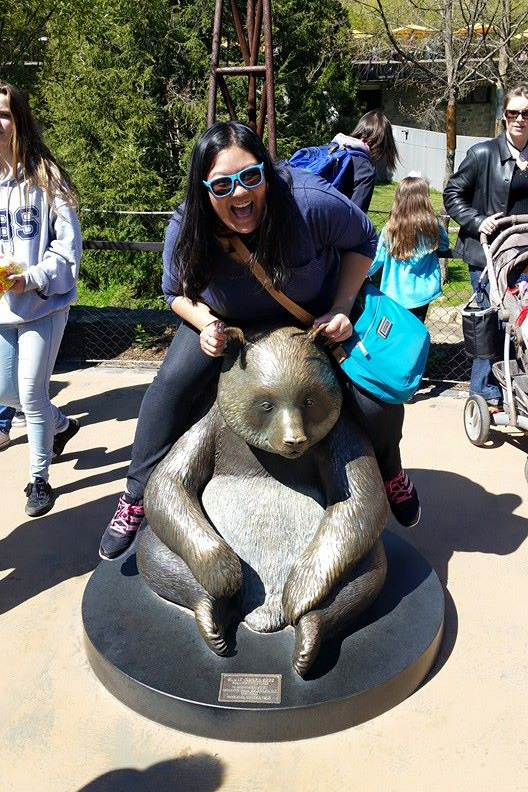

About Me
Stefanie currently resides in Hamilton, NJ where she was born and raised. She went to Rochester Institute of Technology in Rochester, NY where she received a Bachelor's Degree in Film & Animation in 2013. Stefanie got her start as an animator through an internship at Dunnamic in Langhorne, PA and became the Senior Animator in 2014.
Since the close of Dunnamic in the fall of 2015, Stefanie has worked various freelance animator/illustrator positions along with a short gig as a substitute teacher. When she's not working, Stefanie enjoys watching films, playing ukulele, and cooking.